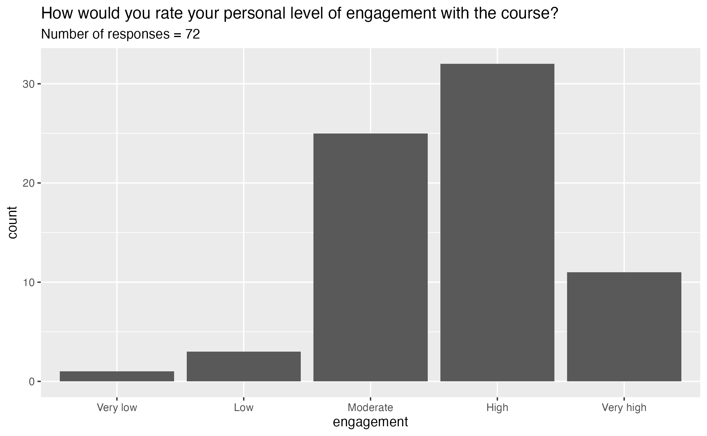
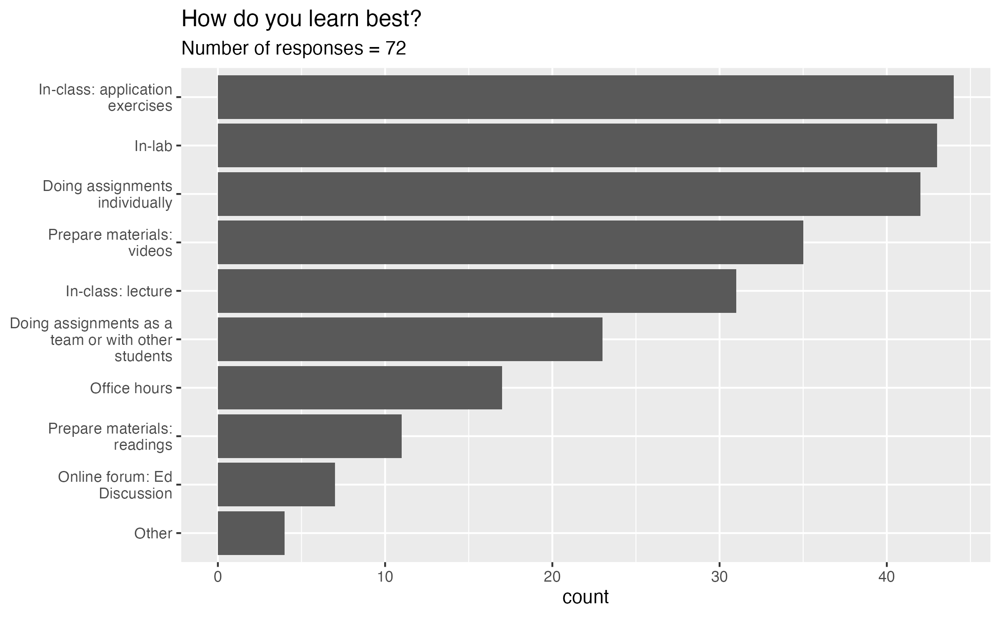
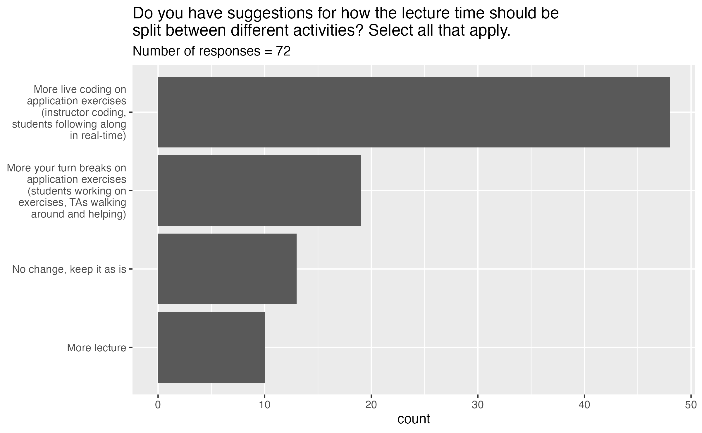
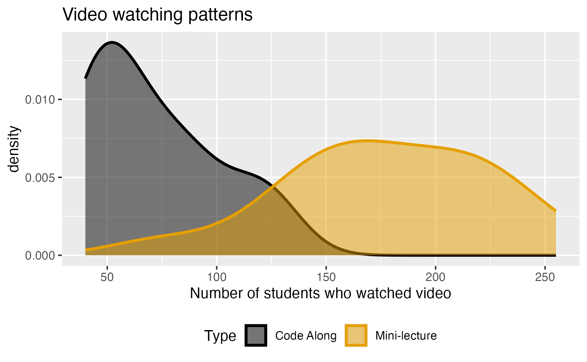
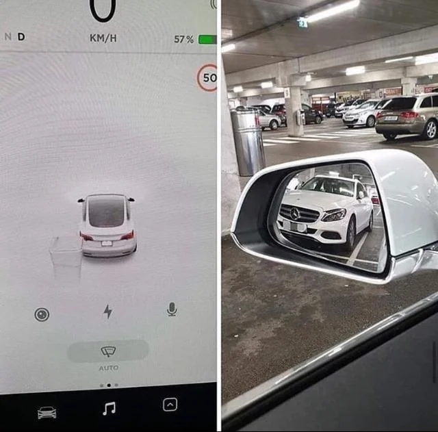
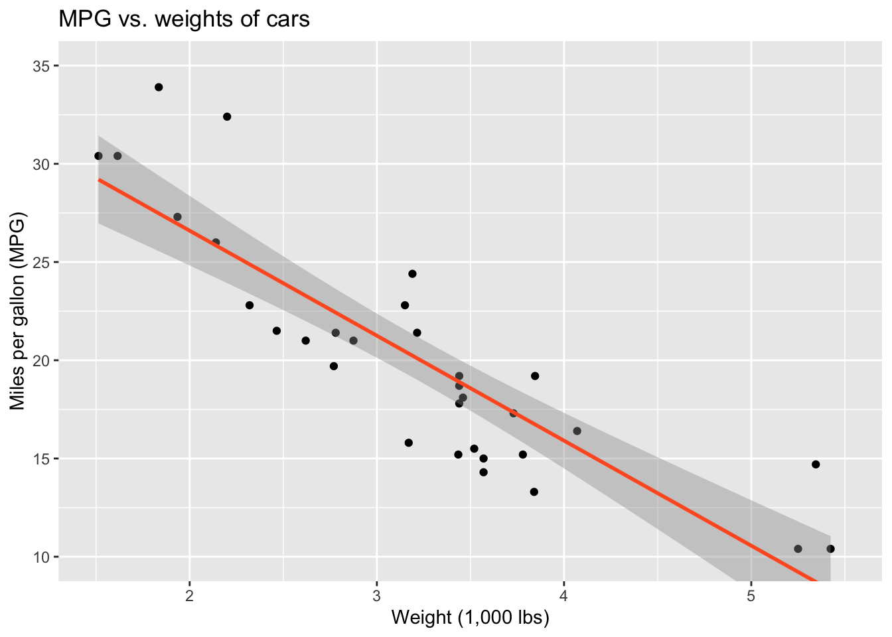
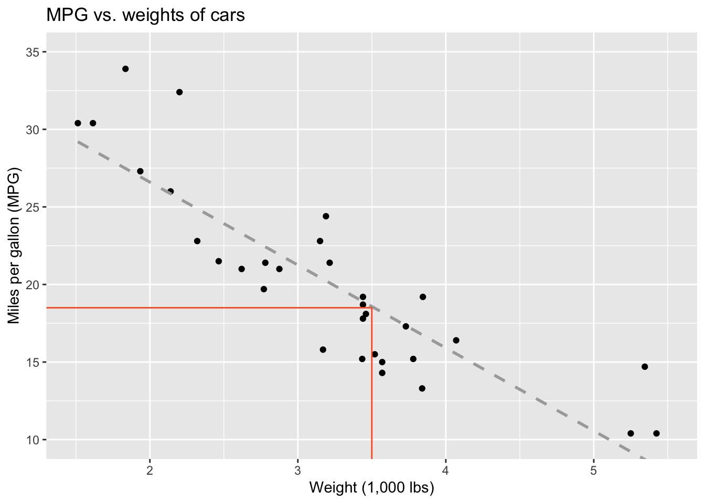
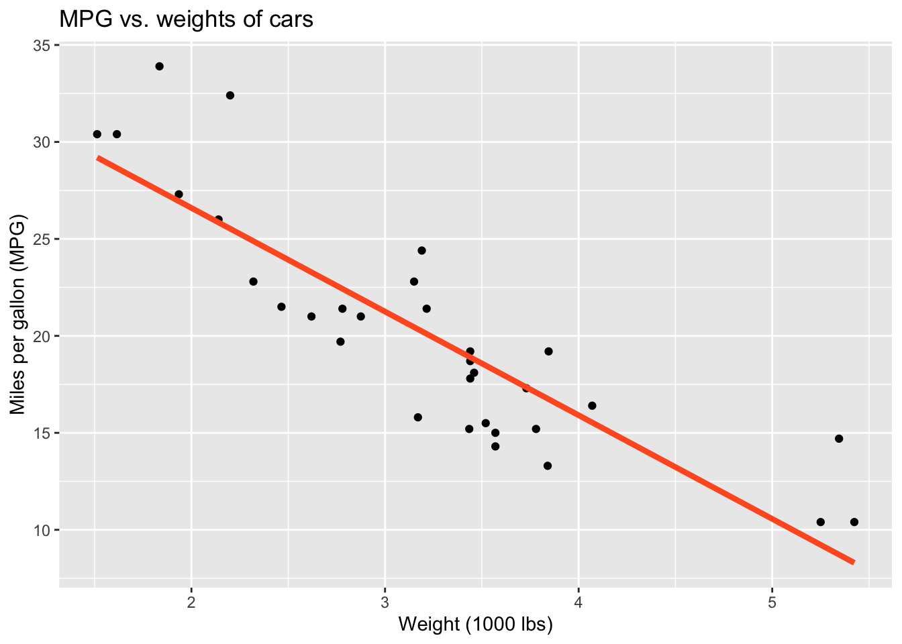
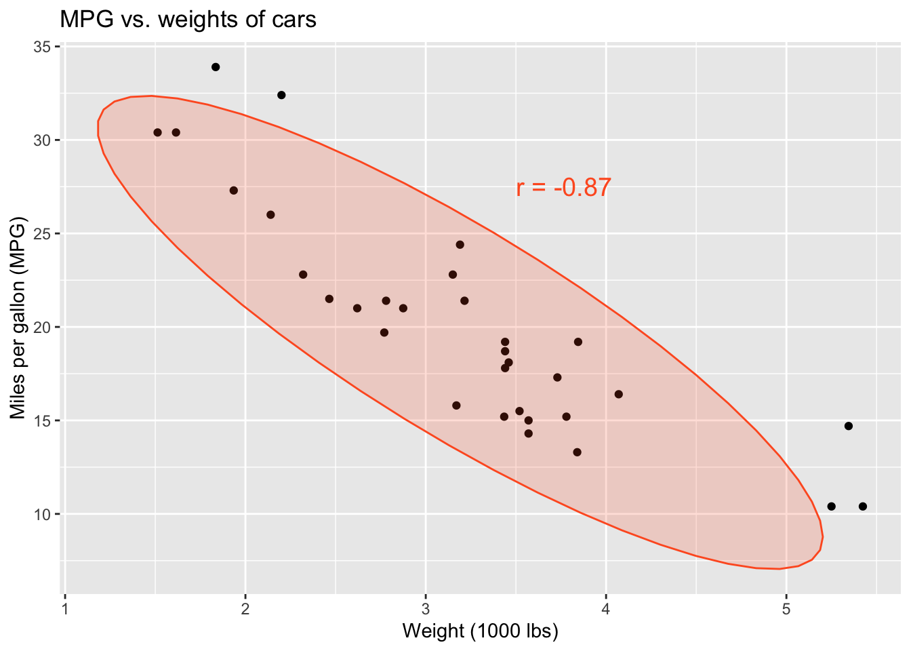
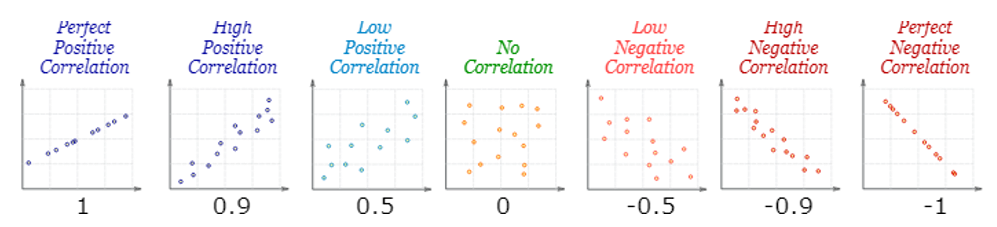

Language of models
Lecture 14
Warm-up
While you wait…
Go to your
aeproject in RStudio.Make sure all of your changes up to this point are committed and pushed, i.e., there’s nothing left in your Git pane.
Click Pull to get today’s application exercise file: ae-12-modeling-fish.qmd.
Wait till the you’re prompted to work on the application exercise during class before editing the file.
Announcements
- Project proposals due next Monday
Midsemester feedback
Course pace

Lecture pace

Engagement

Resources

Learn best

Lecture

Difficulty

Guess
Can you guess what this box plot represents?

Video watching patterns

Prediction / classification
Goals
- What is a model?
- Why do we model?
- What is correlation?
Let’s drive a Tesla!
Semi or garage?
i love how Tesla thinks the wall in my garage is a semi. üòÖ

Source: Reddit
Semi or garage?
New owner here. Just parked in my garage. Tesla thinks I crashed onto a semi.

Source: Reddit
Car or trash?
Tesla calls Mercedes trash

Source: Reddit
Description
Leisure, commute, physical activity and BP
Byambasukh, Oyuntugs, Harold Snieder, and Eva Corpeleijn. “Relation between leisure time, commuting, and occupational physical activity with blood pressure in 125 402 adults: the lifelines cohort.” Journal of the American Heart Association 9.4 (2020): e014313.
Leisure, commute, physical activity and BP
Background: Whether all domains of daily‐life moderate‐to‐vigorous physical activity (MVPA) are associated with lower blood pressure (BP) and how this association depends on age and body mass index remains unclear.
Methods and Results: In the population‐based Lifelines cohort (N=125,402), MVPA was assessed by the Short Questionnaire to Assess Health‐Enhancing Physical Activity, a validated questionnaire in different domains such as commuting, leisure‐time, and occupational PA. BP was assessed using the last 3 of 10 measurements after 10 minutes’ rest in the supine position. Hypertension was defined as systolic BP ≥140 mm Hg and/or diastolic BP ≥90 mm Hg and/or use of antihypertensives. In regression analysis, higher commuting and leisure‐time but not occupational MVPA related to lower BP and lower hypertension risk. Commuting‐and‐leisure‐time MVPA was associated with BP in a dose‐dependent manner. β Coefficients (95% CI) from linear regression analyses were −1.64 (−2.03 to −1.24), −2.29 (−2.68 to −1.90), and finally −2.90 (−3.29 to −2.50) mm Hg systolic BP for the low, middle, and highest tertile of MVPA compared with “No MVPA” as the reference group after adjusting for age, sex, education, smoking and alcohol use. Further adjustment for body mass index attenuated the associations by 30% to 50%, but more MVPA remained significantly associated with lower BP and lower risk of hypertension. This association was age dependent. β Coefficients (95% CI) for the highest tertiles of commuting‐and‐leisure‐time MVPA were −1.67 (−2.20 to −1.15), −3.39 (−3.94 to −2.82) and −4.64 (−6.15 to −3.14) mm Hg systolic BP in adults <40, 40 to 60, and >60 years, respectively.
Conclusions: Higher commuting and leisure‐time but not occupational MVPA were significantly associated with lower BP and lower hypertension risk at all ages, but these associations were stronger in older adults.
Modeling
Modeling cars
- What is the relationship between cars’ weights and their mileage?
- What is your best guess for a car’s MPG that weighs 3,500 pounds?

Modelling cars
Describe: What is the relationship between cars’ weights and their mileage?

Modelling cars
Predict: What is your best guess for a car’s MPG that weighs 3,500 pounds?

Modelling
- Use models to explain the relationship between variables and to make predictions
- For now we will focus on linear models (but there are many many other types of models too!)
Modelling vocabulary
- Predictor (explanatory variable)
- Outcome (response variable)
- Regression line
- Slope
- Intercept
- Correlation
Predictor (explanatory variable)
| mpg | wt |
|---|---|
| 21 | 2.62 |
| 21 | 2.875 |
| 22.8 | 2.32 |
| 21.4 | 3.215 |
| 18.7 | 3.44 |
| 18.1 | 3.46 |
| ... | ... |

Outcome (response variable)
| mpg | wt |
|---|---|
| 21 | 2.62 |
| 21 | 2.875 |
| 22.8 | 2.32 |
| 21.4 | 3.215 |
| 18.7 | 3.44 |
| 18.1 | 3.46 |
| ... | ... |

Regression line

Regression line: slope

Regression line: intercept

Correlation

Correlation
- Ranges between -1 and 1.
- Same sign as the slope.

Visualizing the model
Application exercise
ae-12-modeling-fish
Go to your ae project in RStudio.
If you haven’t yet done so, make sure all of your changes up to this point are committed and pushed, i.e., there’s nothing left in your Git pane.
If you haven’t yet done so, click Pull to get today’s application exercise file: ae-12-modeling-fish.qmd.
Work through the application exercise in class, and render, commit, and push your edits.